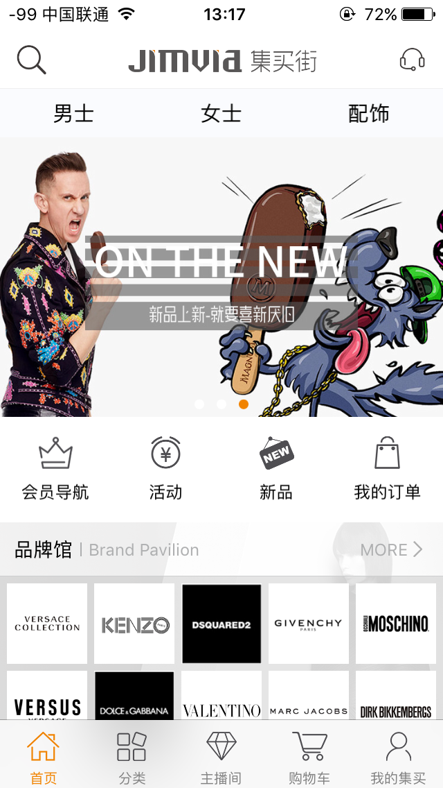
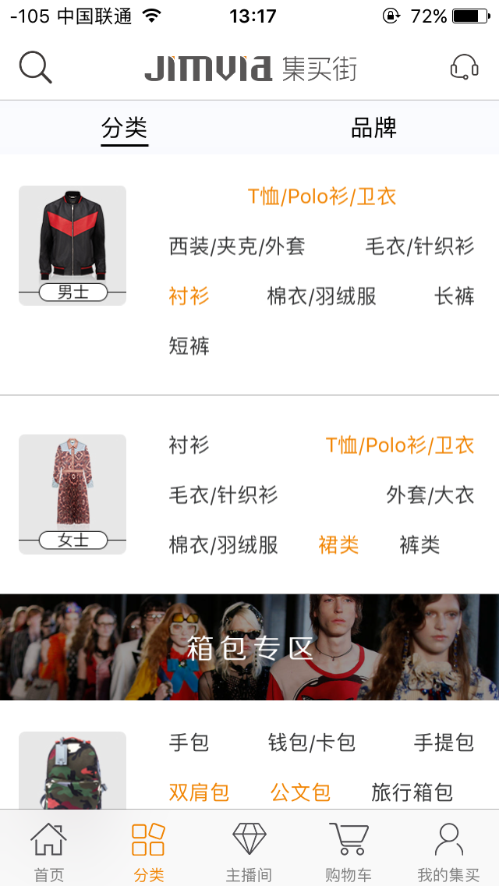

集买街
“集买街JIMVIA”是为满足实体门店客户消费需求而打造的线上销售服务平台，实现终端零售新体验，打造全球奢侈品电商现货平台， 以实现集团商品一体化的O2O服务模式。主要经营全球知名箱包、服饰、配饰、鞋履等品类。
-
工作职责
1.担任iOS Leader，协助iOS开发团队完成每日开发任务。
2.负责集买街APP性能的优化，动画效果制作
3.负责集买街APP购物流程，加入购物车到订单结算的开发。 -
使用技术
1.APP使用OC作为主要开发语言。
2.整体架构是MVC，(后期有部分模块使用了RAC+MVVM)。
3.APP搭建界面以xib为主，同时也使用了masonry。
4.使用AFN作为网络请求工具，数据交互格式为json。
5.使用YYKit里面的模型转换和图片缓存工具。
6.使用环信的SDK实现在线咨询的功能